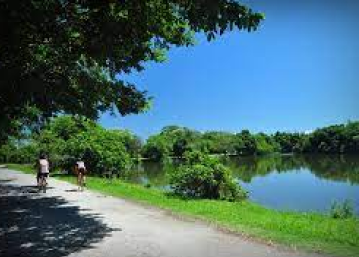
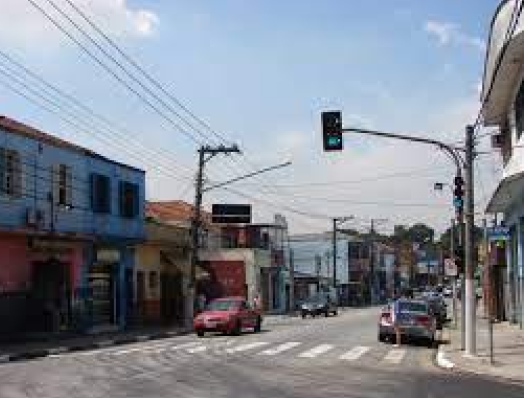

Procurando uma coisa legal para fazer pela Freguesia do Ó? Aqui vão algumas dicas!
Caminhadas
Caminhar pelas ruas do bairro Freguesia do Ó é apreciar coisa bonita para se olhar a perder de vista. Casas antigas, com aquele aspecto do interior e muitas árvores para fazer aquela sombrinha gostosa em dias de muito sol. A região ainda possui casas que foram construídas em meados do século XX, que mantém viva a história não apenas da Freguesia do Ó e região, mas também da cidade de São Paulo.
Mescla-se com este cenário alguns prédios já erguidos e de estrutura moderna, bem planejada, que em nada destoam do lugar. É a cidade do interior, dentro desta imensa metrópole que, tão antiga como ela, começa a se revelar como uma promessa em desenvolvimento, sem perder o charme de sempre. As pistas para caminhada das avenidas General Edgar Facó e Inajar de Souza trazem de volta a chance do uso saudável das grandes vias da capital.
Avenida Itaberaba
Da mesma forma que tem quem ame “bater-perna” na 25 de Março, há quem goste de “correr” por todo o comércio da Avenida Itaberaba, repleto de todos os artigos possíveis, a quem possa precisar.
Em épocas festivas como dia das mães, dia dos pais, dia das crianças, Natal, e outras, a avenida “ferve” de gente que corre para aproveitar todas as promoções possíveis. Se alguém nunca passeou pela Avenida Itaberaba, não sabe o que é curtir o bairro Freguesia do Ó.
O lugar conta com lojas de todos os tipos, desde vestuário até bancário é realmente uma experiência muito legal e barata.
Largo da Matriz
O largo da Matriz é diverso. Tem comes e bebes para gostos todos os bolsos além de ser ótimo para as mais diversas classes sociais. Tem música ao vivo de estilos variados, mescla ambientes simples a alguns mais sofisticados.
O lugar é marcado por minis bares que compõem a estrutura do ambiente que é repleto de cadeiras e mesas de plástico para casais, famílias e crianças que tomam a praça — lotada nos dois dias de visita do Guia.
O clima é de interior, e a presença constante da polícia dá mais segurança. Encare uma batida de frente, aproveitando as indicações que o Guia traz a seguir.

Feira das Nações
A feira das nações é um evento para ajudar pessoas carentes, é promovido pela Paróquia Nossa Senhora do Ó.
Ela também está entre os principais pontos do bairro Freguesia do Ó e oferece cultura em moda, acessórios e gastronomia de todas as partes do mundo e recebe milhares de pessoas anualmente. Além de apresentações musicais e espetáculos de dança.
Apresenta algumas culturas como: alemã, italiana, japonesa, brasileira, portuguesa etc. Vale muito a pena participar!

Largo do Clipper
O apelido da praça se deu por conta do famoso "Cine Clipper", que nos anos 60, reunia toda juventude do bairro diante dos clássicos que eram lançados na época.
O verdadeiro nome do Largo é Oliveira Viana, e hoje, no prédio em que havia o cinema, está instalada uma agência do Banco do Brasil.
A praça sempre foi o centro comercial do bairro, desde o século XIX até a atualidade. Nessa praça acontece, todos os anos, a Festa do Divino Espírito Santo, que é uma das mais tradicionais da cidade. Este é um dos poucos bairros que ainda comemora essa festa, ao lado da Penha de França.

Esportes e Jogos
Quem ama esportes encontra no Centro Esportivo da Freguesia do Ó – CEEFÓ, todas as modalidades possíveis para se exercitar e se divertir.
Há também quem goste de assistir a um bom futebol de Várzea, e nestas condições, o campo do 7 de Setembro é um programa lendário para os amantes do esporte. Este local já é tão tradicional, que consegue reunir até quem não curte muito futebol, mas adora aproveitar o dia e curtir um bom papo.

Além destes locais, o bairro Freguesia do Ó conta também com os tradicionais clubes de malha e de bocha.
Na praça Flávio Rangel, localizada à Avenida Miguel Conejo, uma pista de skate é bem movimentada o dia todo, e atrai jovens não só do bairro, como de outros distritos da cidade. Inclusive, alguns grupos chegam a organizar uma espécie de zeladoria, que tem a função de manter o local sempre preservado.